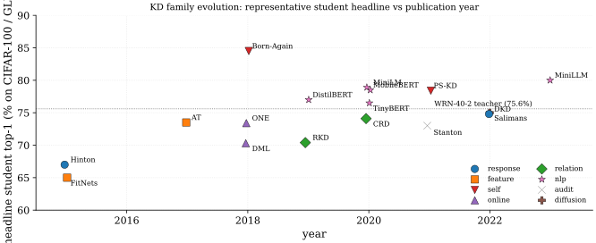

Knowledge distillation sits within the broader model-compression taxonomy alongside pruning, low-rank factorization, and quantization-aware training. Pruning removes redundant parameters, quantization reduces numeric precision, and distillation replaces the teacher with a smaller student parameterization. Unlike unstructured pruning and quantization, distillation changes the architecture of the deployed model, which permits structural compression that cannot be expressed as a sparsity pattern or bit-width reduction. Structured pruning also deploys a smaller dense network, since it removes whole filters together with their feature maps (Li et al. 2017), but only within the teacher's own topology, while a distilled student can belong to a different architecture family: ResNet-50 -> MobileNet-V1 in Table tbl:kd-classification-benchmarks, or the ViT-7B -> ConvNeXt students of DINOv3, a transfer that Section 7.2 of (Siméoni et al. 2025) describes as bridging two fundamentally different architectures.
The intellectual precursor of KD is the work of (Buciluǎ et al. 2006), who showed that a small neural network (a 1-hidden-layer "mimic model" with 128-256 units) can be trained to recover on average 97% of the RMSE improvement that an ensemble-selection model (built from SVMs, boosted trees, bagged trees, random forests, kNN and others) makes over the best plain neural net across eight binary problems, producing a 1000x size reduction whose original motivation was strictly deploying ensembles onto 2006-era PDAs and embedded devices. Their loss was mean-squared-error on the ensemble's predicted probability (regression onto raw probabilities, not logits and not KL on softened distributions), which is structurally distinct from Hinton's method. Their compression pipeline used MUNGE, a synthetic-data generator that expands the training set by perturbing each feature of a real example (with probability a feature takes its nearest neighbor's value, continuous features with added Gaussian noise). MUNGE was needed because in-distribution labelled data alone was insufficient to transfer the ensemble's decision boundary, and MUNGE is load-bearing: with independently sampled pseudo data instead, mimic nets trained on 100k cases or more do worse than a net trained on the original 4k (Figure 2). A notable empirical observation was that the mimic often beats individual ensemble members despite being trained against the mean, suggesting the compression captures ensemble behavior more regularly than any single component does. The failure mode Hinton later solved is saturation: when the ensemble's predicted probabilities are near 0 or 1, the MSE gradient nearly vanishes; this is precisely what motivates temperature scaling. (Ba and Caruana 2014) extended the idea by matching the logits (pre-softmax activations) of a deep teacher rather than its probabilities; their key empirical finding on TIMIT phone recognition was that a 1-hidden-layer net with 8k units trained on hard labels reaches 23.1% phone error rate, trained on the logits of a 9-CNN ensemble (18.5%) it reaches 21.6%, level with a 21.9% deep net, and widened to 400k units it reaches 20.0% against 19.5% for a single deep CNN (Table 1). This holds only when the regression target is logits, not softmax probabilities, since logit regression preserves gradient magnitude even when teacher probabilities saturate. They also introduced a bottleneck linear-layer trick: the wide shallow models took multiple weeks to converge even on a GPU, so they factorize the input-to-hidden weights through 250 linear units on TIMIT (1200 on CIFAR-10), cutting memory from to . This low-rank factorization predates modern LoRA by almost a decade. The claim in the paper's title ("Do Deep Nets Really Need to Be Deep?") is pointed but often misread: the paper does not claim shallow nets are inherently sufficient, only that the optimization problem for shallow nets can reach good solutions when guided by a deep teacher. The distinction bears on any contemporary "is distillation necessary?" argument. (Hinton et al. 2015) unified and formalized these approaches, introducing the temperature-scaled softmax that makes logit-matching recoverable as a limit case of probability-matching, and popularized the term "dark knowledge" for the information contained in the teacher's off-target probabilities.
Subsequent research diverged along two axes. The representation axis asks what to match: probabilities (Hinton et al. 2015), intermediate features (Romero et al. 2015), attention maps (Zagoruyko and Komodakis 2017), pairwise relations (Park et al. 2019), or contrastive similarity (Tian et al. 2020). The training-regime axis asks how to organize the teacher-student loop: offline (Hinton et al. 2015), online (Zhang et al. 2018), self-distillation (Furlanello et al. 2018), or iterative (Mirzadeh et al. 2020). More recent theoretical work has examined why distillation helps generalization (Menon et al. 2021), when it fails silently (Stanton et al. 2021), and how it relates to label smoothing (Müller et al. 2019).
Related to but distinct from KD are self-supervised learning methods that use self-distillation as a pretext task rather than a compression mechanism. DINO (Caron et al. 2021) and BYOL apply EMA-based teacher-student dynamics for representation learning, borrowing the optimization template of distillation but aiming for representation quality rather than compression. (Tian et al. 2020) explicitly connects contrastive representation learning to distillation through the CRD framework.
| Method | Year | Backbone | Loss | Data | CIFAR-100 Student | Teacher | NLP GLUE | SQuAD | |
|---|---|---|---|---|---|---|---|---|---|
| Bucilua (Buciluǎ et al. 2006) | 2006 | 1-hidden MLP | MSE on probs | 8 binary sets | - | - | - | - | - |
| Ba & Caruana (Ba and Caruana 2014) | 2014 | shallow MLP | MSE on logits | TIMIT | - | - | - | - | - |
| Hinton (Hinton et al. 2015) | 2015 | MLP/DNN | KL () + CE | MNIST/speech | - | - | - | - | - |
| FitNets (Romero et al. 2015) | 2015 | 19-layer thin | KL + MSE (hint) | CIFAR-10/100 | 64.96 | 63.54 | n/r | - | - |
| AT (Zagoruyko and Komodakis 2017) | 2017 | WRN-16-2 | CE + MSE (attention maps, ) | CIFAR-100 | 74.08 | 75.61 | +0.8 | - | - |
| RKD (Park et al. 2019) | 2019 | VGG11-BN | CE + Huber (distance) + Huber (angle) | CIFAR-100 | 72.97 | 77.76 | +1.7 | - | - |
| CRD (Tian et al. 2020) | 2020 | WRN-40-1 | CE + InfoNCE (, ) | CIFAR-100 | 74.14 | 75.61 | +2.2 | - | - |
| DKD (Zhao et al. 2022) | 2022 | WRN-40-1 | TCKD () + NCKD () | CIFAR-100 | 74.81 | 75.61 | +2.8 | - | - |
| DML (Zhang et al. 2018) | 2018 | ResNet-32×2 | CE + KL (peer, no ) | CIFAR-100 | 71.19 | - | +2.2 | - | - |
| ONE (Lan et al. 2018) | 2018 | ResNet-32, | KL () + gated ensemble | CIFAR-100 | 73.39 | - | +4.6 | - | - |
| Born-Again (Furlanello et al. 2018) | 2018 | DenseNet-80-80 | KL (same architecture, generation 3) | CIFAR-100 | 84.50 | 82.84 | +1.7 | - | - |
| PS-KD (Kim et al. 2021) | 2021 | PreAct ResNet-18 | KL to past self, linear from 0 to 0.8 | CIFAR-100 | 79.18 | - | +3.4 | - | - |
| DistilBERT (Sanh et al. 2019) | 2019 | 6L Transf. | MLM + KL () + cosine | BookCorp+W. | - | - | - | 77.0 | 86.9 |
| TinyBERT (Jiao et al. 2020) | 2020 | 4L Transf. | MSE (attention) + MSE (hidden) + KL (prediction) | BookCorp+W. | - | - | - | 77.0 | 82.1 |
| MobileBERT (Sun et al. 2020) | 2020 | 24L Transf. | KL (post-softmax attention) + MSE + progressive freeze | BookCorp+W. | - | - | - | 77.7 | 90.0 |
| MiniLM (6L, 768h) (Wang et al. 2020) | 2020 | 6L Transf. | KL () + KL (), last layer | BookCorp+W. | - | - | - | 80.4 | n/r |
| FGFI (Wang et al. 2019) | 2019 | Faster R-CNN | MSE (near-object mask) | VOC07, COCO | - | - | - | - | - |
| Stanton (Stanton et al. 2021) | 2021 | ResNet-20/56/50 | KL audit (self-distill) | CIFAR/IN1k | - | - | n/r | - | - |
| Salimans diffusion (Salimans and Ho 2022) | 2022 | U-Net | MSE (-parameterization, 2-step rollout) | CIFAR-10 | - | - | - | - | - |
The literature falls into seven families (Table 1), walked through in chronological order. Early response distillation methods (Bucilua, Ba & Caruana, Hinton) match either probabilities or logits between teacher and student; the procedure is simple and effective when the capacity gap is moderate, but it leaves no signal on intermediate representations and degrades under heavy compression1. The Hinton temperature-scaled KL emerged as the dominant logit-based method and is still the single-method baseline reproductions reach for, with DKD (Zhao et al. 2022) later showing that the implicit suppression of the non-target term silently kills the dark-knowledge signal precisely when the teacher is most confident; explicit reweighting (β from 2 to 8 on CIFAR-100) recovers a lift of 1.03 to 3.00 points over vanilla KD across the eleven teacher-student pairs in the DKD paper's CIFAR-100 tables.
Feature distillation (FitNets, AT, NST, FSP) and relational distillation (RKD, CRD) constitute the second strand. They supplement the output match with constraints on intermediate representations or pairwise structure, which adds learning signal when the gap is large2 but introduces a hint-layer choice3. CRD imports the InfoNCE machinery from contrastive learning with K=16384 negatives in a memory bank and provides a 2.36-point lift over KD on the heterogeneous VGG-13 MobileNet-V2 pair (69.73% against 67.37%), where point-wise feature matching stalls.
Online and self-distillation (DML, ONE, Born-Again, PS-KD) abandon the offline pre-training requirement: peers train jointly (DML, ONE) or the teacher is the model's own past checkpoint (Born-Again, PS-KD). DML's surprising finding is that small + large peers both improve over solo training, which fits the regularization channel4 better than the "knowledge transfer" framing; identical initialization collapses the KL term, an instability that recurs across peer methods5. PS-KD operates at epoch scale with a linearly annealed αt from 0 to 0.8 over training, providing the smooth spectral-shrinkage curriculum (Mobahi et al. 2020) formalizes for kernel regression, at the operational cost of caching one prediction-distribution snapshot per training sample (5 GB FP32 on ImageNet).

NLP distillation (DistilBERT, TinyBERT, MobileBERT, MiniLM) is empirically the most consequential application: every entry retains 96-99% of BERT-base's GLUE while shrinking the model 1.7-7.5x and accelerating inference 1.6-9.4x. The four methods differ in which structural objects are matched: DistilBERT matches output KL plus hidden-state cosine; TinyBERT adds pre-softmax attention MSE plus a two-stage (general + task-specific) procedure with BERT-paraphrased data augmentation; MobileBERT redesigns each layer into an inverted bottleneck and trains an IB-BERT teacher-assistant before progressive layer-wise freeze-and-distill; MiniLM matches only QQ/KK and VV self-attention relations on the last layer (dimension-agnostic). All four depend critically on layer-copy initialization from the teacher6, and DistilBERT's drop-in compatibility (same tokenizer, same hidden size) is arguably more responsible for its adoption than its raw GLUE score. The LLM era pushes the procedure further: MiniLLM (Gu et al. 2024) swaps forward for reverse KL7 and trains via policy gradient on student rollouts to suppress the long-tail mean-seeking behaviour that produces hedging outputs at 32K-128K vocabulary scale.
Task-specific distillation (FGFI for detection, Structured-KD for segmentation, Salimans progressive distillation for diffusion) tailors the matching to dense or generative outputs. FGFI restricts feature distillation to near-object anchor positions; imitating the whole feature map instead falls below the undistilled student because background features swamp object features8. Salimans progressive distillation halves the teacher's denoising steps recursively (8192 4096 ... 4 over 11 rounds) and reports FID 3.0 on CIFAR-10 at the 4-step end of that chain; the procedure requires deterministic DDIM sampling, warm-start from teacher weights, and v-parameterization without which the loss explodes at noise extremes9.
Diagnostic and theoretical work (Stanton, Müller, Menon, Yuan, Busbridge) frames the field's open questions rather than providing new methods. Stanton's audit finds a self-distilled ResNet-20 still disagreeing with its teacher on 16.7% of CIFAR-100 training images after 5k epochs, and the most accurate students are not the most faithful: KD is partly implicit-regularization rather than faithful imitation10. Müller shows that a label-smoothed teacher makes a worse teacher than an unsmoothed one of lower accuracy, because the penultimate similarity structure collapses11. Yuan's teacher-free Tf-KD gains up to 0.65 points of ImageNet top-1 with no teacher at all, supporting a regularization-dominant view4. Busbridge's scaling-law analysis (Busbridge et al. 2025) finds that for fixed student compute, teacher size has an optimum and over-large teachers hurt12, retiring the folklore "teacher 4x student" prescription. These threads remain unreconciled: the dark-knowledge and regularization hypotheses are both supported by direct experiments, and the practical implication is that distillation strength depends on regime (capacity gap, teacher quality, dataset size) more than on objective design.
Read back over those families and one axis organises all of them. Each method family is a choice of which channel carries the teacher's signal, and each new channel was opened because the one before it ran out of signal at some capacity gap. Online and self-distillation open different channels and take separate rows, and the diagnostic work, which is not a channel at all, stays aside (Table 2). The chronology above and the era boundaries below are then two readings of the same object rather than two competing taxonomies.
| Family | Channel matched | Opened because | Charged in |
|---|---|---|---|
| response | softened output distribution | one-hot labels carry no inter-class structure | one -vector per sample, no matter the depth |
| feature | intermediate activations, attention maps | the output channel is too thin when the gap is large | a hint-layer choice worth 1-2 points3 |
| relational | pairwise distance, angle, contrastive similarity | point-wise features are not comparable across architectures | - batch terms, memory bank |
| online | peers' outputs, co-trained | offline requires a finished teacher first | peers must differ at init and clear a capacity floor5 |
| self | the model's own past or deeper self | no teacher exists, or none is wanted | 3x compute (BAN) or one cached prediction per sample (PS-KD) |
| NLP structural | attention, hidden states, QK/VV relations | transformers expose matched objects at every layer | layer-copy init constrains student shape6 |
| task-specific | masked features, dense affinities, sampler rollouts | dense and generative outputs have no single softmax | mask ratio, sampler and parameterization all load-bearing17 |
The diagnostic row of the leaderboard belongs to none of these channels. It asks a prior question, how much of any row's gain is the teacher's content at all, and that question is taken up in the theory section. It is also what the era boundaries below are ultimately tracking.
The field divides into four eras: response-only (2006-2015), feature/relational expansion (2015-2020), online/self-distillation and NLP scaling (2018-2021), and the modern logit-decoupled + LLM-distillation line (2022-2023). Three readings. First, gains from logit distillation alone plateau around the WRN-40-2 WRN-40-1 baseline of about 73.5%; DKD's logit-only approach reaches 74.8%, above CRD's 74.14% and below the 75.09% of the feature-based ReviewKD in DKD's own Table 6, and from 2015 to 2022 the vision methods stay between 65% and 75% except Born-Again, whose 84.5% is a same-architecture DenseNet result (Figure 1). Second, NLP distillation is the empirically most successful application of KD: every method on the GLUE band retains 96.8% or more of its teacher's GLUE score at 1.6-9.4x speedup, far exceeding the proportional gains seen in vision distillation. Third, recent diagnostic and scaling-law work has shifted the field's framing from "how do we transfer more knowledge" to "how do we balance fidelity, regularization, and optimization dynamics", which means newer methods (DKD, MiniLLM, Tf-KD) increasingly justify themselves through diagnostic ablations rather than benchmark-only comparisons.
References
Extreme-compression breakdown: as the teacher of a 2-layer CNN student grows from 4 to 10 layers, the student's accuracy first rises and then falls; an intermediate teacher assistant bridges the gap at the cost of one more training run (Mirzadeh et al. 2020).↩︎
Teacher capacity gap: distilling from a teacher whose VC-dimension or depth exceeds the student's by a large factor frequently hurts rather than helps; the student cannot represent the teacher's decision boundary and its gradient descent oscillates between partial approximations (Mirzadeh et al. 2020).↩︎
Hint-layer choice: feature distillation requires picking which student layer is supervised by which teacher layer; Romero et al. take the middle layer of each and note that a deeper guided layer over-regularizes the student, and a deeper learned regressor partly defeats the purpose by offloading representational work onto the regressor itself (Romero et al. 2015).↩︎
Dark-knowledge vs. regularization: even hand-crafted "teachers" (uniform-over-non-target, label-smoothed one-hot) recover much of the KD gain, and reverse-distillation (small teacher improving large student) shows that classical "knowledge transfer" overstates the role of teacher content (Yuan et al. 2020).↩︎
Online co-training instability: peer methods (DML, ONE) require independent random initialization and a capacity floor; identical inits collapse the KL term to zero, and very-low-capacity peers cannot generate informative soft targets for each other (Zhang et al. 2018).↩︎
Layer-copy initialization fragility: NLP distillation depends critically on copying alternate teacher layers as the student warm-start. Random init costs 3.69 GLUE points, which constrains student architecture to share the teacher's hidden dimension (Sanh et al. 2019).↩︎
KL direction is empirical. Forward KL is mean-seeking and produces hedging students. Reverse KL is mode-seeking but unstable without policy-gradient variance reduction. The choice has no clean theoretical winner and depends on whether the deployment task rewards coverage or concentration (Gu et al. 2024).↩︎
Detection imitation-mask sensitivity: object-detector distillation breaks under naive feature matching because background positions dominate the feature map; imitating the whole map costs a quarter-width toy detector 8.9 mAP on KITTI, while imitating near-object anchor locations gains 6.6 (Wang et al. 2019).↩︎
Diffusion-distillation prerequisites: progressive distillation requires a deterministic teacher sampler (DDIM, not DDPM), warm-start from teacher weights, and v-parameterization; cold init or stochastic samplers fail outright (Salimans and Ho 2022).↩︎
Silent fidelity failure: a self-distilled ResNet-20 still disagrees with its teacher on 16.7% of CIFAR-100 training images after 5k epochs, and the most accurate students are not the most faithful; KD's gain depends on a delicate fidelity-regularization trade-off rather than on faithful imitation (Stanton et al. 2021).↩︎
Label-smoothing equivalence: a teacher trained with label smoothing collapses its penultimate similarity structure, and distillation from such a teacher produces a worse student than distilling from an unsmoothed teacher of lower accuracy. The soft-target signal is not just confidence reduction (Müller et al. 2019).↩︎
Teacher-size saturation: for a fixed student-compute budget, larger teachers help only up to a threshold beyond which they hurt; the optimal teacher size shifts with student compute, so fixed-ratio prescriptions ("teacher 4x student") should be retired (Busbridge et al. 2025).↩︎